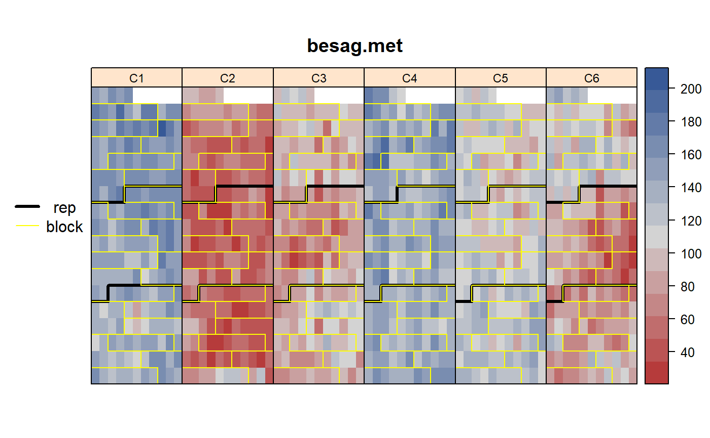
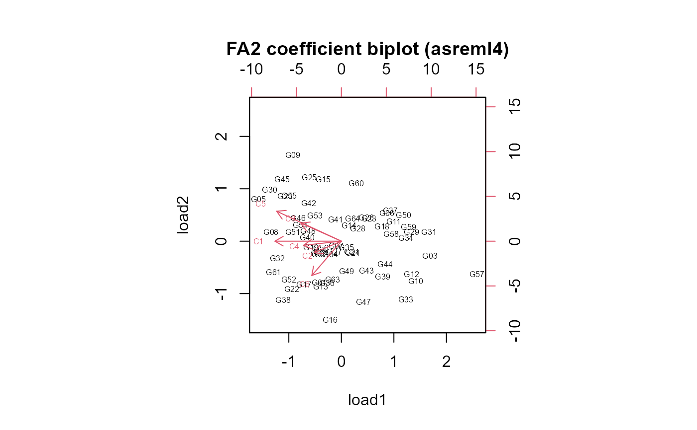
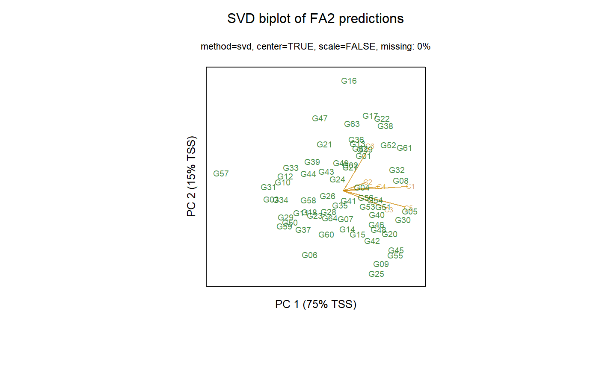

besag.met.RdMulti-environment trial of corn, incomplete-block designlocation.
A data frame with 1152 observations on the following 7 variables.
countycounty
rowrow
colcolumn
reprep
blockincomplete block
yieldyield
gengenotype, 1-64
Multi-environment trial of 64 corn hybrids in six counties in North Carolina. Each location had 3 replicates in in incomplete-block design with an 18x11 lattice of plots whose length-to-width ratio was about 2:1.
Note: In the original data, each county had 6 missing plots. This data has rows for each missing plot that uses the same county/block/rep to fill-out the row, sets the genotype to G01, and sets the yield to missing. These missing values were added to the data so that asreml could more easily do AR1xAR1 analysis using rectangular regions.
Each location/panel is:
Field length: 18 rows * 2 units = 36 units.
Field width: 11 plots * 1 unit = 11 units.
Retrieved from http://web.archive.org/web/19990505223413/www.stat.duke.edu/~higdon/trials/nc.dat
Used with permission of David Higdon.
Julian Besag and D Higdon, 1999. Bayesian Analysis of Agricultural Field Experiments, Journal of the Royal Statistical Society: Series B, 61, 691--746. Table 1. http://doi.org/10.1111/1467-9868.00201
# \dontrun{ library(agridat) data(besag.met) dat <- besag.met libs(desplot) desplot(dat, yield ~ col*row|county, aspect=36/11, # true aspect out1=rep, out2=block, main="besag.met")# Average reps datm <- aggregate(yield ~ county + gen, data=dat, FUN=mean) # Sections below fit heteroskedastic variance models (variance for each variety) # asreml takes 1 second, lme 73 seconds, SAS PROC MIXED 30 minutes # lme # libs(nlme) # m1l <- lme(yield ~ -1 + gen, data=datm, random=~1|county, # weights = varIdent(form=~ 1|gen)) # m1l$sigma^2 * c(1, coef(m1l$modelStruct$varStruct, unc = FALSE))^2 ## G02 G03 G04 G05 G06 G07 G08 ## 91.90 210.75 63.03 112.05 28.39 237.36 72.72 42.97 ## ... etc ... # Note, the FA biplots from asreml3 and asreml4 are surprisingly # different from each other. The predicted-value biplots are # almost identical. libs(asreml) if( utils::packageVersion("asreml") < "4") { # asreml3 # asreml Using 'rcov' ALWAYS requires sorting the data datm <- datm[order(datm$gen),] m1a <- asreml(yield ~ gen, data=datm, random = ~ county, rcov = ~ at(gen):units) libs(lucid) vc(m1a)[1:7,] ## effect component std.error z.ratio constr ## county!county.var 1324 838.2 1.6 pos ## gen_G01!variance 91.93 58.82 1.6 pos ## gen_G02!variance 210.7 133.9 1.6 pos ## gen_G03!variance 63.03 40.53 1.6 pos ## gen_G04!variance 112.1 71.53 1.6 pos ## gen_G05!variance 28.39 18.63 1.5 pos ## gen_G06!variance 237.4 150.8 1.6 pos # We get the same results from asreml & lme # plot(m1a$gammas[-1], # m1l$sigma^2 * c(1, coef(m1l$modelStruct$varStruct, unc = FALSE))^2) # The following example shows how to construct a GxE biplot # from the FA2 model. dat <- besag.met dat <- transform(dat, xf=factor(col), yf=factor(row)) dat <- dat[order(dat$county, dat$xf, dat$yf), ] # First, AR1xAR1 m1 <- asreml(yield ~ county, data=dat, random = ~ gen:county, rcov = ~ at(county):ar1(xf):ar1(yf)) # Add FA1. # For ASExtras:::summary.fa, use fa(county,1):gen, NOT gen:fa(county,1) m2 <- update(m1, random=~ gen:fa(county,1)) # FA2 m3 <- update(m2, random=~ gen:fa(county,2)) m3 <- update(m3) # Use the loadings to make a biplot vars <- vc(m3) psi <- vars[grepl(".var$", vars$effect), "component"] la1 <- vars[grepl(".fa1$", vars$effect), "component"] la2 <- vars[grepl(".fa2$", vars$effect), "component"] mat <- as.matrix(data.frame(psi, la1, la2)) rot <- svd(mat[,-1])$v # rotation matrix lam <- mat[,-1] colnames(lam) <- c("load1", "load2") co3 <- coef(m3)$random # Scores are the GxE coefficients ix1 <- grepl("_Comp1$", rownames(co3)) ix2 <- grepl("_Comp2$", rownames(co3)) sco <- matrix(c(co3[ix1], co3[ix2]), ncol=2, byrow=FALSE) sco <- sco dimnames(sco) <- list(levels(dat$gen) , c('load1','load2')) rownames(lam) <- levels(dat$county) sco[,1] <- -1 * sco[,1] lam[,1] <- -1 * lam[,1] biplot(sco, lam, cex=.5, main="FA2 coefficient biplot (asreml3)") # G variance matrix gvar <- lam # Now get predictions and make an ordinary biplot p3 <- predict(m3, data=dat, classify="county:gen") p3 <- p3$pred$pval libs("gge") bi3 <- gge(p3, predicted.value ~ gen*county, scale=FALSE) if(interactive()) dev.new() # Very similar to the coefficient biplot biplot(bi3, stand=FALSE, # what does 'stand' do? main="SVD biplot of FA2 predictions") } libs(asreml) if( utils::packageVersion("asreml") > "4") { # asreml4 # Average reps datm <- aggregate(yield ~ county + gen, data=dat, FUN=mean) # asreml Using 'rcov' ALWAYS requires sorting the data datm <- datm[order(datm$gen),] m1 <- asreml(yield ~ gen, data=datm, random = ~ county, residual = ~ dsum( ~ units|gen)) libs(lucid) vc(m1)[1:7,] ## effect component std.error z.ratio bound ## county 1324 836.1 1.6 P 0.2 ## gen_G01!R 91.98 58.91 1.6 P 0.1 ## gen_G02!R 210.6 133.6 1.6 P 0.1 ## gen_G03!R 63.06 40.58 1.6 P 0.1 ## gen_G04!R 112.1 71.59 1.6 P 0.1 ## gen_G05!R 28.35 18.57 1.5 P 0.2 ## gen_G06!R 237.4 150.8 1.6 P 0 # We get the same results from asreml & lme # plot(m1$vparameters[-1], # m1l$sigma^2 * c(1, coef(m1l$modelStruct$varStruct, unc = FALSE))^2) # The following example shows how to construct a GxE biplot # from the FA2 model. dat <- besag.met dat <- transform(dat, xf=factor(col), yf=factor(row)) dat <- dat[order(dat$county, dat$xf, dat$yf), ] # First, AR1xAR1 m1 <- asreml(yield ~ county, data=dat, random = ~ gen:county, residual = ~ dsum( ~ ar1(xf):ar1(yf)|county)) # Add FA1 m2 <- update(m1, random=~gen:fa(county,1)) # rotate.FA=FALSE # FA2 m3 <- update(m2, random=~gen:fa(county,2)) asreml.options(extra=50) m3 <- update(m3, maxit=50) asreml.options(extra=0) # Use the loadings to make a biplot vars <- vc(m3) psi <- vars[grepl("!var$", vars$effect), "component"] la1 <- vars[grepl("!fa1$", vars$effect), "component"] la2 <- vars[grepl("!fa2$", vars$effect), "component"] mat <- as.matrix(data.frame(psi, la1, la2)) # I tried using rotate.fa=FALSE, but it did not seem to # give orthogonal vectors. Rotate by hand. rot <- svd(mat[,-1])$v # rotation matrix lam <- mat[,-1] colnames(lam) <- c("load1", "load2") co3 <- coef(m3)$random # Scores are the GxE coefficients ix1 <- grepl("_Comp1$", rownames(co3)) ix2 <- grepl("_Comp2$", rownames(co3)) sco <- matrix(c(co3[ix1], co3[ix2]), ncol=2, byrow=FALSE) sco <- sco dimnames(sco) <- list(levels(dat$gen) , c('load1','load2')) rownames(lam) <- levels(dat$county) sco[,1:2] <- -1 * sco[,1:2] lam[,1:2] <- -1 * lam[,1:2] biplot(sco, lam, cex=.5, main="FA2 coefficient biplot (asreml4)") # G variance matrix gvar <- lam # Now get predictions and make an ordinary biplot p3 <- predict(m3, data=dat, classify="county:gen") p3 <- p3$pvals libs("gge") bi3 <- gge(p3, predicted.value ~ gen*county, scale=FALSE) if(interactive()) dev.new() # Very similar to the coefficient biplot biplot(bi3, stand=FALSE, main="SVD biplot of FA2 predictions") }#> Multi-section model using the sigma parameterization. #> ASReml 4.1.0 Thu Jul 30 15:47:27 2020 #> LogLik Sigma2 DF wall cpu #> 1 -1172.163 1.0 320 15:47:27 0.0 (60 restrained) #> 2 -1011.805 1.0 320 15:47:27 0.0 (1 restrained) #> 3 -970.591 1.0 320 15:47:27 0.0 #> 4 -940.691 1.0 320 15:47:27 0.0 #> 5 -927.170 1.0 320 15:47:27 0.0 #> 6 -923.727 1.0 320 15:47:27 0.0 #> 7 -923.239 1.0 320 15:47:27 0.0 #> 8 -922.976 1.0 320 15:47:27 0.0 #> 9 -922.903 1.0 320 15:47:27 0.0 #> 10 -922.899 1.0 320 15:47:27 0.0 #> Multi-section model using the sigma parameterization. #> ASReml 4.1.0 Thu Jul 30 15:47:28 2020 #> LogLik Sigma2 DF wall cpu #> 1 -3931.453 1.0 1146 15:47:28 0.0 #> 2 -3846.882 1.0 1146 15:47:28 0.0 #> 3 -3765.127 1.0 1146 15:47:28 0.0 #> 4 -3724.260 1.0 1146 15:47:28 0.0 #> 5 -3710.877 1.0 1146 15:47:28 0.0 #> 6 -3709.388 1.0 1146 15:47:28 0.0 #> 7 -3709.308 1.0 1146 15:47:28 0.0 #> 8 -3709.304 1.0 1146 15:47:28 0.0 #> Multi-section model using the sigma parameterization. #> ASReml 4.1.0 Thu Jul 30 15:47:28 2020 #> LogLik Sigma2 DF wall cpu #> 1 -3960.869 1.0 1146 15:47:28 0.1 (1 restrained) #> 2 -3838.939 1.0 1146 15:47:28 0.0 #> 3 -3738.501 1.0 1146 15:47:28 0.0 #> 4 -3685.886 1.0 1146 15:47:28 0.0 #> 5 -3667.580 1.0 1146 15:47:28 0.0 #> 6 -3665.255 1.0 1146 15:47:28 0.0 #> 7 -3665.089 1.0 1146 15:47:28 0.0 #> 8 -3665.077 1.0 1146 15:47:28 0.1 #> 9 -3665.076 1.0 1146 15:47:28 0.0 #> Multi-section model using the sigma parameterization. #> ASReml 4.1.0 Thu Jul 30 15:47:28 2020 #> LogLik Sigma2 DF wall cpu #> 1 -3960.862 1.0 1146 15:47:28 0.1 (1 restrained) #> 2 -3926.560 1.0 1146 15:47:28 0.0 (1 restrained) #> 3 -3833.085 1.0 1146 15:47:29 0.0 (1 restrained) #> 4 -3735.147 1.0 1146 15:47:29 0.0 (1 restrained) #> 5 -3683.543 1.0 1146 15:47:29 0.0 (1 restrained) #> 6 -3665.368 1.0 1146 15:47:29 0.0 #> 7 -3662.711 1.0 1146 15:47:29 0.0 #> 8 -3662.471 1.0 1146 15:47:29 0.0 #> 9 -3662.452 1.0 1146 15:47:29 0.0 #> 10 -3662.449 1.0 1146 15:47:29 0.0 #> 11 -3662.449 1.0 1146 15:47:29 0.0#> Warning: Some components changed by more than 1% on the last iteration.#> Multi-section model using the sigma parameterization. #> ASReml 4.1.0 Thu Jul 30 15:47:29 2020 #> LogLik Sigma2 DF wall cpu #> 1 -3662.448 1.0 1146 15:47:29 0.1 #> 2 -3662.448 1.0 1146 15:47:29 0.0 #> 3 -3662.448 1.0 1146 15:47:29 0.0 #> 4 -3662.448 1.0 1146 15:47:29 0.0 #> 5 -3662.448 1.0 1146 15:47:29 0.0 #> 6 -3662.448 1.0 1146 15:47:29 0.0 #> 7 -3662.448 1.0 1146 15:47:29 0.0 #> 8 -3662.448 1.0 1146 15:47:29 0.0 #> 9 -3662.448 1.0 1146 15:47:29 0.0 #> 10 -3662.448 1.0 1146 15:47:29 0.0 #> 11 -3662.448 1.0 1146 15:47:30 0.0 #> 12 -3662.448 1.0 1146 15:47:30 0.0 #> 13 -3662.448 1.0 1146 15:47:30 0.0 #> 14 -3662.448 1.0 1146 15:47:30 0.0 #> 15 -3662.448 1.0 1146 15:47:30 0.0 #> 16 -3662.448 1.0 1146 15:47:30 0.0 #> 17 -3662.448 1.0 1146 15:47:30 0.0 #> 18 -3662.448 1.0 1146 15:47:30 0.0 #> 19 -3662.448 1.0 1146 15:47:30 0.0 #> 20 -3662.448 1.0 1146 15:47:30 0.0 #> 21 -3662.448 1.0 1146 15:47:30 0.0 #> 22 -3662.448 1.0 1146 15:47:30 0.0 #> 23 -3662.447 1.0 1146 15:47:30 0.0 #> 24 -3662.447 1.0 1146 15:47:30 0.0 #> 25 -3662.447 1.0 1146 15:47:30 0.0 #> 26 -3662.447 1.0 1146 15:47:30 0.0 #> 27 -3662.447 1.0 1146 15:47:30 0.0 #> 28 -3662.447 1.0 1146 15:47:30 0.0 #> 29 -3662.447 1.0 1146 15:47:30 0.0 #> 30 -3662.447 1.0 1146 15:47:30 0.0 #> 31 -3662.447 1.0 1146 15:47:30 0.0 #> 32 -3662.447 1.0 1146 15:47:30 0.0 #> 33 -3662.447 1.0 1146 15:47:30 0.0 #> 34 -3662.447 1.0 1146 15:47:30 0.0 #> 35 -3662.447 1.0 1146 15:47:30 0.0 #> 36 -3662.447 1.0 1146 15:47:31 0.0 #> 37 -3662.447 1.0 1146 15:47:31 0.0 #> 38 -3662.447 1.0 1146 15:47:31 0.0 #> 39 -3662.447 1.0 1146 15:47:31 0.0 #> 40 -3662.447 1.0 1146 15:47:31 0.0 #> 41 -3662.447 1.0 1146 15:47:31 0.0 #> 42 -3662.447 1.0 1146 15:47:31 0.0 #> 43 -3662.447 1.0 1146 15:47:31 0.0 #> 44 -3662.447 1.0 1146 15:47:31 0.0 #> 45 -3662.447 1.0 1146 15:47:31 0.0 #> 46 -3662.447 1.0 1146 15:47:31 0.0 #> 47 -3662.447 1.0 1146 15:47:31 0.0 #> 48 -3662.446 1.0 1146 15:47:31 0.0 #> 49 -3662.446 1.0 1146 15:47:31 0.0 #> 50 -3662.446 1.0 1146 15:47:31 0.0#> Warning: Some components changed by more than 1% on the last iteration.#> Multi-section model using the sigma parameterization. #> ASReml 4.1.0 Thu Jul 30 15:47:31 2020 #> LogLik Sigma2 DF wall cpu #> 1 -3662.446 1.0 1146 15:47:31 0.1 #> 2 -3662.446 1.0 1146 15:47:31 0.0 #> 3 -3662.446 1.0 1146 15:47:32 0.1#> Warning: Some components changed by more than 1% on the last iteration.#> #>#> #> #># }